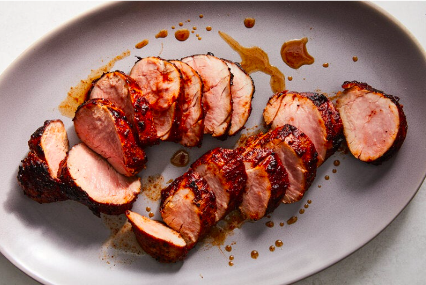

Pork Tenderloin

Description
Small enough to cook relatively quickly, but large and elegant enough to make a centerpiece roast,
pork tenderloin is the kind of dish to pull out when you're feeling extra fancy on a weeknight.
Cooking it sous vide is the most foolproof way to get it on the table with consistently great flavor and a buttery,
ultra-tender texture.
Ingredients
- ⅓ cup litre soy sauce
- ¼ cup sesame oil
- 2 tablespoons Worcestershire sauce
- ⅛ cup packed light brown sugar
- 3 green onions, chopped
- 4 cloves garlic, crushed
- 1 ½ tablespoons Asian chile paste
- 1 ½ teaspoons pepper
- 1 (2 pound) fat-trimmed pork tenderloin
Instructions
- Pour into a medium bowl the soy sauce, sesame oil, and Worcestershire sauce. Then whisk in brown sugar, green onions, garlic, chile paste, and pepper. Place the tenderloin in a ziploc bag. Pour sauce over tenderloin, turning the meat a few times to coat. zip up bag, and refrigerate at least 8 hours.
- Preheat sous vide bath to 130 degrees F for 1-4 hours
- Once preheated, place bag of marinated pork into the bath while letting air escape the bag. Seal the bag once all air is out and leave in and wait.
- Take out pork and let rest for 10 minutes.
- Use a culinary torch to toast the outside of the pork or sear in a pan with oil.
- Slice pork and season with salt, pepper, and green onions.